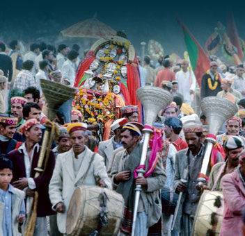

Pipal Jatra :
Also known as the Vasantotsava, Pipal Jatra is a carnival hosted in Kullu's Dhalpur that begins on the 16th day of Baisakh. Song and dance shows light up the spirit and stalls add color to the merriment.